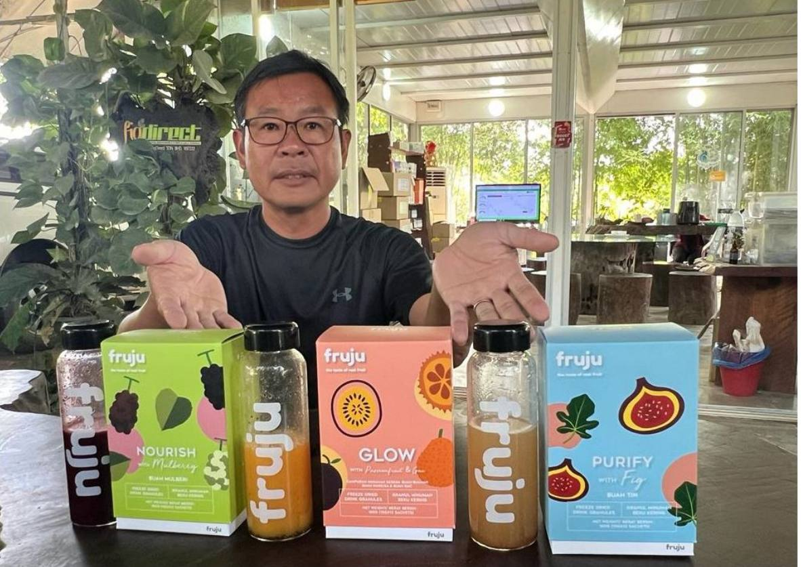

Robin Lim

Robin Lim merupakan pemilik Super Fruit Valley yang mempunyai latar belakang dalam bidang pengurusan hotel dan juga sebagai kontraktor. Dengan pengalaman yang dimiliki, beliau menggunakan kemahiran tersebut untuk membangunkan sebuah projek pertanian di Perlis.
Idea untuk membangunkan ladang ini tercetus daripada kesedaran beliau tentang kepentingan sumber makanan. Beliau berpendapat bahawa tanpa tanaman dan pertanian, manusia akan menghadapi kekurangan makanan yang boleh menjejaskan kehidupan.
Pada peringkat awal, projek ini dimulakan untuk kegunaan sendiri sebelum berkembang menjadi sebuah destinasi agro pelancongan.
Sepanjang perjalanan membangunkan projek ini, beliau menghadapi pelbagai cabaran, namun dengan usaha berterusan, Super Fruit Valley kini menjadi salah satu tarikan di Perlis.